Satyajit Ray: His Written Books and Literary Career
Satyajit Ray (1921–1992) was not only a legendary filmmaker but also one of the most celebrated writers in Bengali literature. He created memorable fictional characters, detective mysteries, science fiction, fantasy stories, and children's literature. His most famous literary creation is Feluda, a brilliant Bengali private detective who solves complex crimes with intelligence, observation, and logical reasoning. Ray's stories were published in Bengali magazines such as Sandesh, Desh, and Anandamela, and many were later collected into books and translated into other languages. His writing continues to entertain readers of different generations.
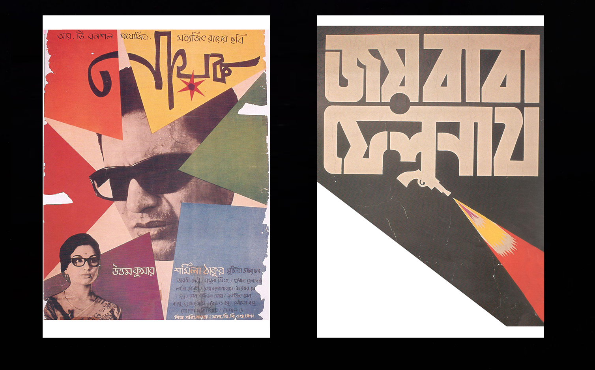
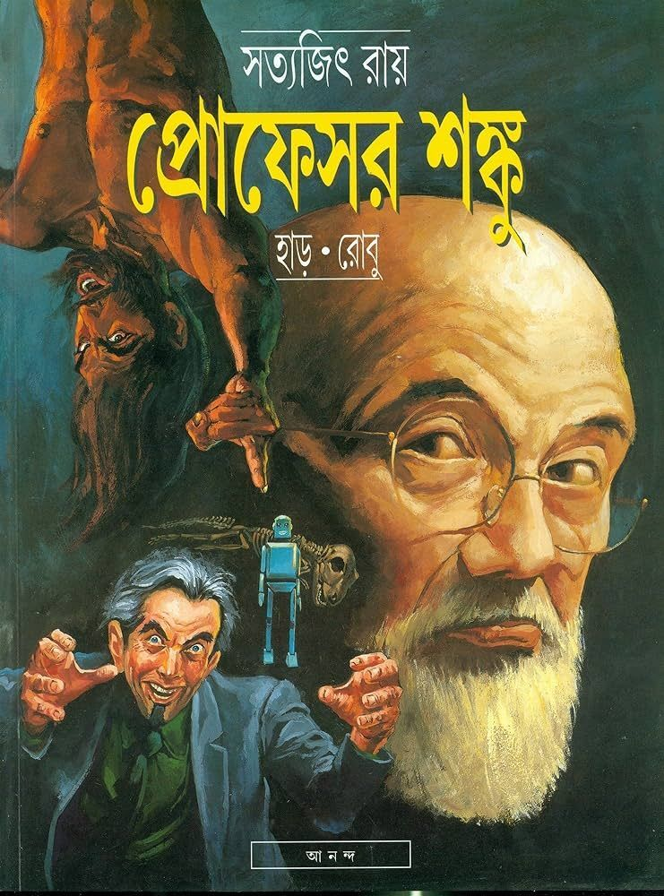
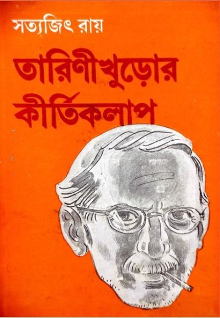
Beginnings as a Writer
Satyajit Ray came from a distinguished Bengali literary family. His grandfather, Upendrakishore Ray Chowdhury, and his father, Sukumar Ray, were influential writers and illustrators. Ray later became closely associated with Sandesh, the children's magazine founded by his family. In the 1960s, he began writing detective fiction for younger readers, introducing Pradosh Chandra Mitter, popularly known as Feluda.
Feluda first appeared in the story Feludar Goendagiri in 1965–66. The character became extremely popular, leading to a long series of novels and short stories set in India and abroad. Ray's writing combines suspense, humour, historical details, travel, cultural observations, and logical deduction. His works appeal to children and adults alike because of their engaging plots and memorable characters.
Famous Books and Literary Works
Ray's best-known books include Badshahi Angti (The Emperor's Ring), Sonar Kella (The Golden Fortress), Joi Baba Felunath (The Mystery of the Elephant God), Kailashey Kelenkari (A Killer in Kailash), Royal Bengal Rahashya (The Royal Bengal Mystery), and Tintorettor Jishu (Tintoretto's Jesus). These stories showcase Feluda's intelligence, his companion Topshe's observations, and the comic presence of the eccentric writer Lalmohan Ganguli, also known as Jatayu.
Ray also wrote mysteries featuring unusual crimes, secret documents, precious jewels, historical artefacts, and unexplained events. His works demonstrate a deep knowledge of Indian history, art, geography, and culture. Many of his stories were adapted into films and television productions, further increasing their popularity.
Feluda Novels and Short Stories
1. Feludar Goendagiri (1965-66)
English title: Danger in Darjeeling. This short story introduced Feluda, Ray's celebrated fictional detective. It established the character's powers of observation, intelligence, and deductive reasoning and marked the beginning of one of Bengali literature's most popular detective series.
2. Badshahi Angti (1966-67)
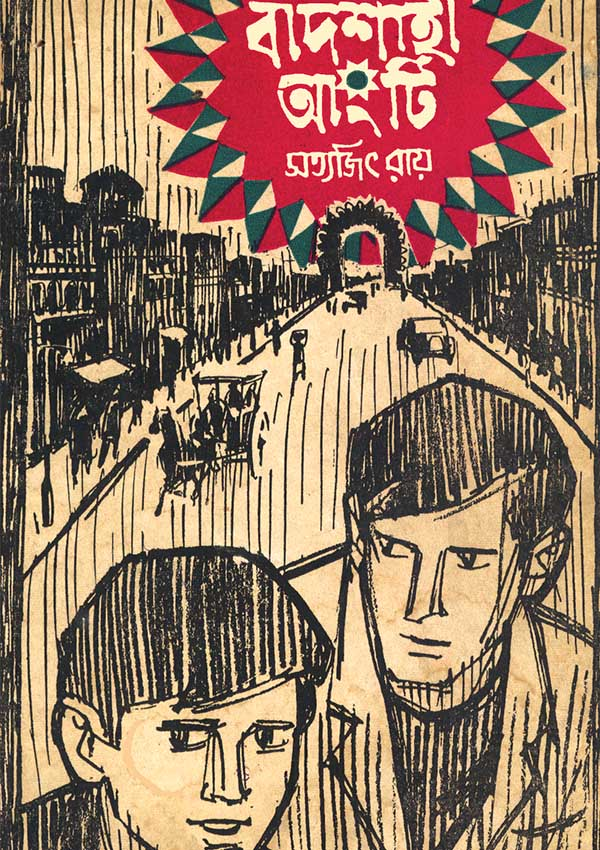
English title: The Emperor's Ring. This novel follows Feluda and Topshe into a mystery involving a valuable ring associated with the Mughal emperor Aurangzeb. It combines historical intrigue, suspense, and detective investigation.
3. Kailash Choudhary'r Pathar (1967)
English title: Kailash Choudhury's Jewel. This short story revolves around a valuable gemstone and a mystery that requires careful observation and reasoning to solve.
4. Sheyal Debota Rahasya (1970)
English title: The Anubis Mystery. This story presents Feluda with a puzzle involving mystery and unusual circumstances. It reflects Ray's talent for building suspense through clues and logical deduction.
5. Gangtokey Gondogol (1970)
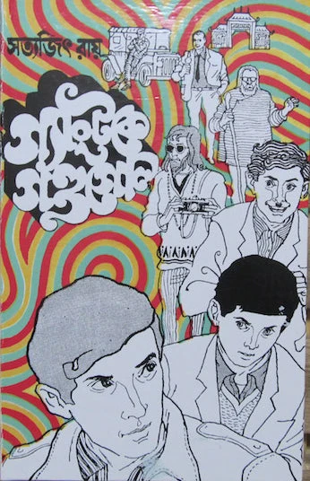
English title: Trouble in Gangtok. In this adventure, Feluda, Topshe, and their companions travel to Gangtok, where an apparently ordinary journey develops into a mystery. The setting adds a distinctive Himalayan atmosphere to the investigation.
6. Sonar Kella (1971)
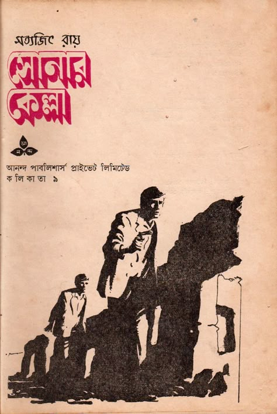
English title: The Golden Fortress. One of Ray's most famous detective novels, it follows a boy who recalls memories of a previous life in a golden fortress in Rajasthan. Feluda investigates the mystery and protects the boy from criminals. The story became the basis of Ray's celebrated 1974 film of the same name.
7. Baksho Rahashya (1972)
English title: Incident on the Kalka Mail. This detective novel centres on a mysterious case involving a box and suspicious circumstances during a railway journey. Feluda's careful reasoning gradually reveals the truth.
8. Kailashey Kelenkari (1973)
English title: A Killer in Kailash. Feluda investigates a case involving valuable historical and religious artefacts. The story blends travel, cultural history, crime, and suspense.
9. Samaddarer Chabi (1973)
English title: The Key. This short story revolves around a puzzling situation in which a key becomes an important clue. Feluda uses his analytical skills to uncover the explanation.
10. Royal Bengal Rahashya (1974)
English title: The Royal Bengal Mystery. Feluda travels into the forests of Bengal, where a mystery involving a tiger, a wealthy household, and hidden secrets unfolds. The novel combines adventure, suspense, and the atmosphere of the natural world.
11. Ghurghutiyar Ghatona (1975)
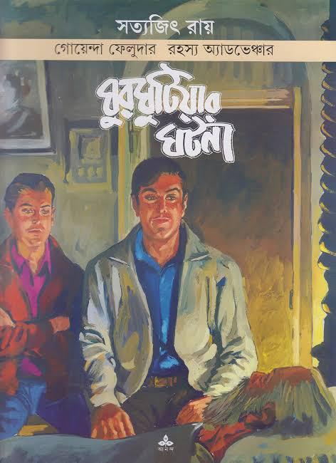
English title: The Locked Chest. This short story centres on a puzzling incident and concealed information. Ray builds suspense through small details that become important to solving the case.
12. Joi Baba Felunath (1975)
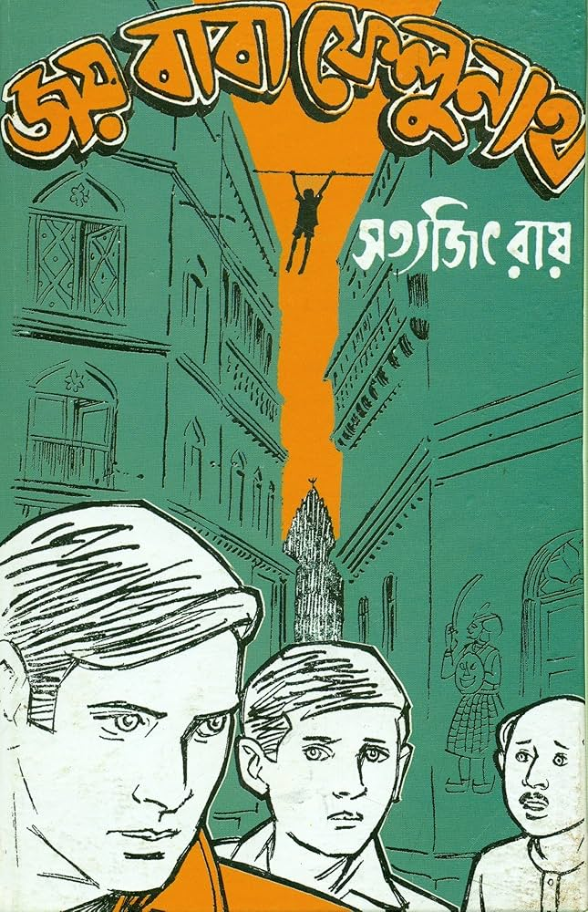
English title: The Mystery of the Elephant God. Set in Varanasi, the story follows Feluda as he investigates the theft of a valuable statue of Ganesha. The novel combines religious and cultural surroundings with criminal intrigue and detective suspense. Ray adapted the story into his 1979 film Joi Baba Felunath.
13. Bombaiyer Bombete (1976)
English title: The Bandits of Bombay. Feluda investigates a mystery in Mumbai involving suspicious activities and criminals. The story brings the detective into a bustling metropolitan setting filled with unexpected developments.
14. Gosainpur Sargaram (1976)
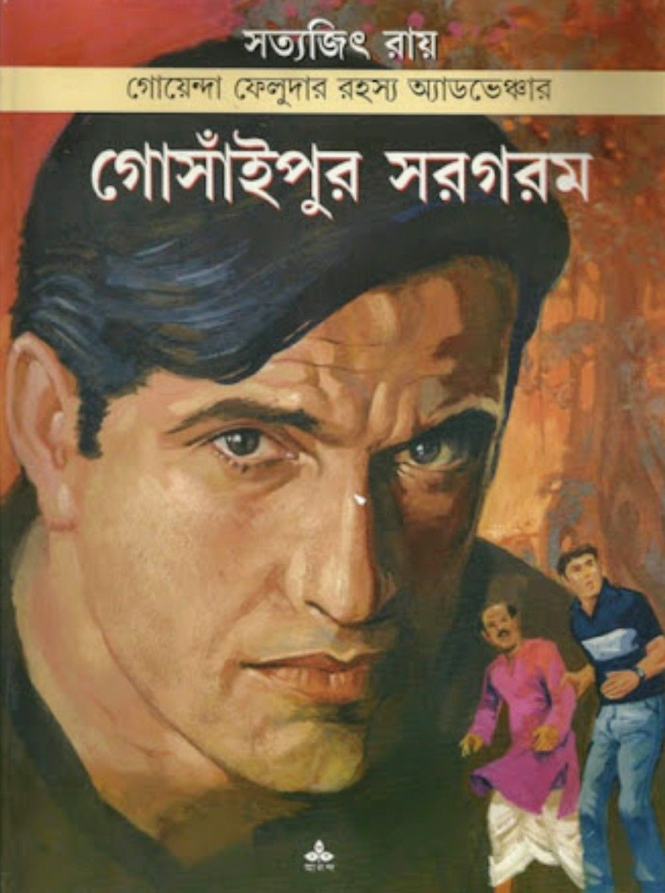
English title: The Mystery of Walking Dead. This mystery explores strange events in a place where seemingly inexplicable occurrences create fear and suspicion. Feluda investigates the circumstances and searches for a rational explanation.
15. Gorosthaney Sabdhan (1977)
English title: The Secret of the Cemetery. Feluda encounters a mystery involving a cemetery, historical clues, and hidden secrets. The novel combines detective work with a suspenseful atmosphere.
16. Chhinnamastar Abhishap (1978)
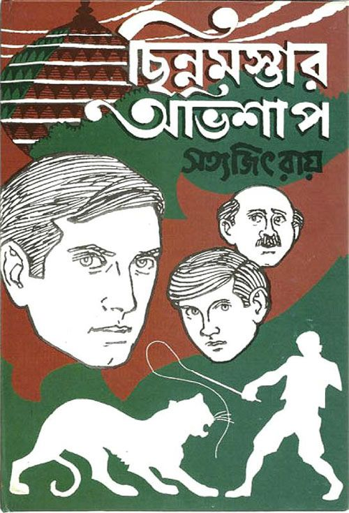
English title: The Curse of the Goddess. This novel combines an intriguing mystery with cultural and historical elements. Feluda must interpret clues and examine the motives of those involved to uncover the truth.
17. Hatyapuri (1979)
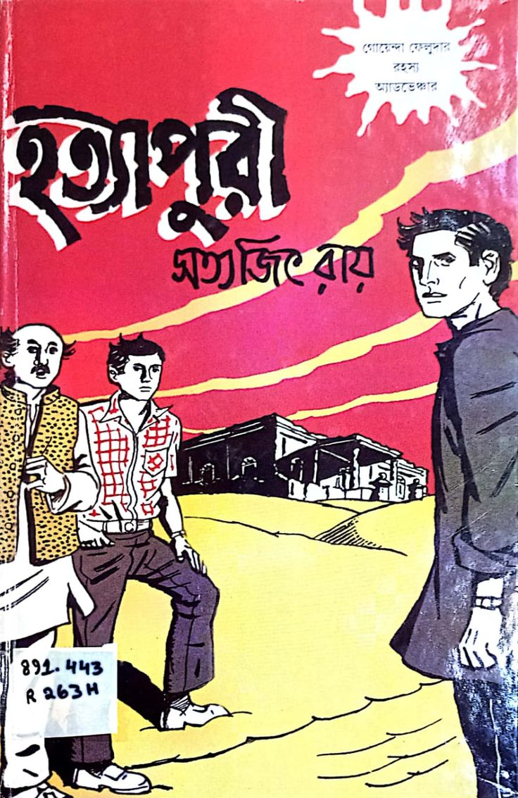
English title: The House of Death. Set in the coastal town of Puri, this novel presents Feluda with a mystery involving suspicious characters and dangerous secrets. Its seaside setting adds atmosphere to the detective adventure.
18. Golokdham Rahasya (1980)
English title: The Mysterious Tenant. This short story revolves around a puzzling case in which unusual behaviour and hidden information attract Feluda's attention.
19. Joto Kando Kathmandutey (1980)
English title: The Criminals of Kathmandu. Feluda travels to Kathmandu and becomes involved in a mystery involving suspicious individuals and criminal activity. The novel combines travel writing with suspense and logical investigation.
20. Napoleoner Chithi (1981)
English title: Napoleon's Letter. This short story centres on a letter connected with Napoleon and the mystery surrounding its significance. It reflects Ray's interest in historical objects and intellectual puzzles.
21. Tintorettor Jishu (1982)
English title: Tintoretto's Jesus. Feluda investigates a case involving a painting associated with the Venetian Renaissance artist Tintoretto. The story combines art history, travel, theft, and detective reasoning.
22. Ambar Sen Antardhan Rahasya (1983)
English title: The Disappearance of Ambar Sen. Feluda investigates the disappearance of Ambar Sen, following clues and questioning those connected with the case. The story focuses on deduction and the careful interpretation of evidence.
23. Jahangirer Swarnamudra (1983)
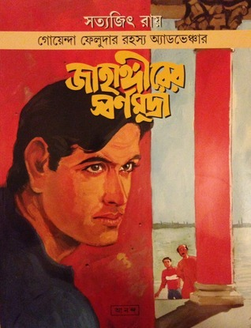
English title: The Gold Coins of Jahangir. This short story revolves around historical gold coins associated with the Mughal emperor Jahangir. Historical curiosity and detective investigation combine in a mystery involving valuable objects.
24. Ebar Kando Kedarnathey (1984)
English title: Crime in Kedarnath. This story takes Feluda into the Himalayan region around Kedarnath, where a mystery unfolds against a distinctive mountain setting.
25. Bosepukurey Khunkharapi (1985)
English title: The Acharya Murder Case. Feluda investigates a murder case involving a network of clues and possible motives. The story highlights Ray's ability to build suspense through character observation and logical reasoning.
26. Darjeeling Jomjomat (1986)
English title: Murder in the Mountains. Set in Darjeeling, this detective adventure brings Feluda into a mystery involving suspicious circumstances and concealed motives in a mountain environment.
27. Apsara Theatrer Mamla (1987)
English title: The Case of the Apsara Theatre. This short story revolves around a mystery connected with a theatre. It draws on Ray's interest in performance, human behaviour, and the secrets that can exist behind public appearances.
28. Bhuswargya Bhayankar (1987)
English title: Peril in Paradise. This story follows Feluda into a dangerous mystery in an apparently attractive setting. Suspense develops as the detective uncovers concealed dangers and hidden motives.
29. Shakuntalar Kontthohar (1988)
English title: Shakuntala's Necklace. A valuable necklace becomes central to a mystery involving clues and suspicious circumstances. Feluda must distinguish fact from deception to reach a solution.
30. Londoney Feluda (1989)
.jpg)
English title: Feluda in London. This story takes the detective to London, where a new case introduces unfamiliar surroundings and fresh challenges. Ray combines travel, cultural observations, and detective suspense.
31. Golapi Mukta Rahasya (1989)
English title: The Mystery of the Pink Pearl. This short story centres on a valuable pink pearl and the mystery surrounding it. The plot uses the familiar Feluda combination of observation, investigation, and unexpected revelations.
32. Dr. Munshir Diary (1990)
English title: Dr. Munshi's Diary. A diary provides the starting point for a mystery in which written records and concealed information play an important role.
33. Nayan Rahasya (1990)
English title: The Mystery of Nayan. Feluda investigates a case involving a young boy whose unusual abilities attract attention. The novel combines observation, psychological intrigue, and detective reasoning.
34. Robertsoner Ruby (1992)
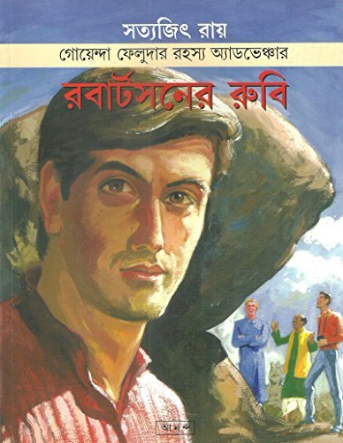
English title: Robertson's Ruby. This novel revolves around a valuable ruby and a mystery involving its history and ownership. Feluda follows the clues to uncover the truth behind the case.
35. Indrajal Rahasya (1995-96)
English title: The Magical Mystery. This later-published story draws on the world of illusion, unusual events, and mystery. It reflects Ray's enduring interest in puzzles and the boundary between what appears mysterious and what can be logically explained.
Writing Style and Literary Legacy
Satyajit Ray's writing is known for its clarity, wit, vivid descriptions, and intelligent plotting. His detective stories rarely depend only on action; instead, they encourage readers to pay attention to details, evaluate evidence, and think critically. His characters are memorable because of their distinctive personalities, humour, knowledge, and relationships.
Feluda's adventures frequently introduce readers to Indian cities, historical landmarks, art, architecture, and cultural traditions. Topshe, Feluda's young cousin and narrator of many adventures, gives readers a relatable point of view, while Jatayu adds humour and warmth to the stories.
Ray's contribution to Bengali literature extends beyond detective fiction. His broader literary work includes science fiction, fantasy, children's stories, and imaginative characters such as Professor Shonku. Through his writing, he encouraged curiosity, rational thinking, creativity, and a love of reading.
Today, Satyajit Ray remains one of the most influential figures in Bengali popular literature. His stories continue to be read, translated, collected, and adapted for film and television. His literary legacy stands alongside his achievements in cinema, making him a uniquely versatile figure in modern Indian culture.